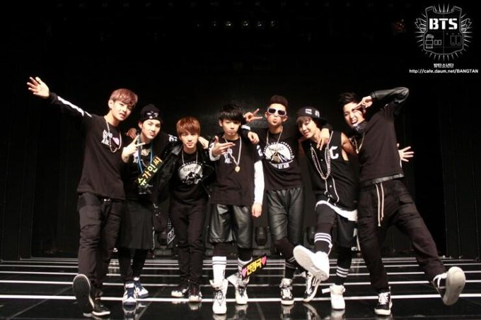

방탄소년단 은 데뷔를 앞둔 2013년 5월 20일, 직접 운영해 온 블로그를 전격 폐쇄하고 공식 홈페이지를 오픈하였다. 2013년 5월 27일, 방탄소년단의 데뷔 트레일러를 공개하며 본격적인 데뷔를 알렸다. 2013년 1월, 방탄소년단은 《학교의 눈물》이라는 믹스테이프를 발매한다. 6월 12일, 데뷔 싱글 앨범 《2 COOL 4 SKOOL》를 발매와 동시에 서울 청담동 일지아트홀에서 열린 방탄소년단 데뷔 쇼케이스를 개최하였다. 이 쇼케이스는 온라인 음원사이트 멜론을 통해 최초로 공개 되었다.
그 후 6월 13일 엠넷 《엠카운트다운》를 통해 공식적으로 데뷔했다. 9월 11일 첫 번째 미니 앨범 《O!RUL8,2?》를 발매하였다. 2013년 9월 3일부터 10월 22일까지 SBS MTV를 통해 방송 된 첫 리얼리티 프로그램 《신인왕 방탄소년단 - 채널방탄》에 고정 출연했다. 가상의 방송국을 설정해, 멤버들이 직접 다양한 포맷의 TV 프로그램에 도전하는 포맷으로 방영되었다. 방탄소년단은 11월 14일 올림픽체조경기장에서 열린 멜론 뮤직 어워드에서 데뷔 싱글 앨범 《2 COOL 4 SKOOL》과 첫 번째 미니 앨범 《O!RUL8,2?》으로 신인상을 첫 수상했다.